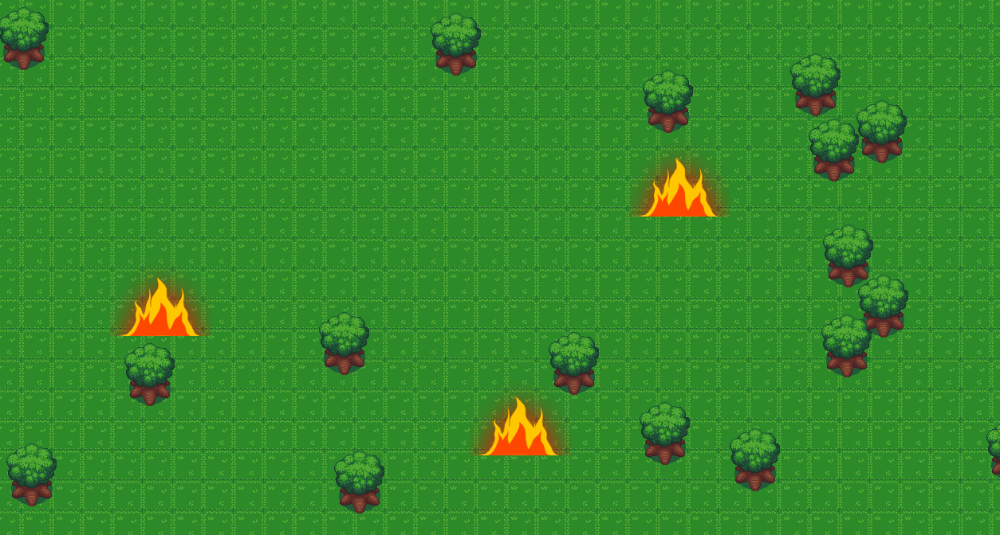

Fast food simulator. Gameplay is your day to day job at Big Grease working the graveyard shift. Your ultimate goal is to make rent for the week. Simulate the exciting life of a fast food employment and flexing your time management skills. how ever beware the supernatural events that occur during your monotonous job.
Itch.io Page
Wizards Day" is a top-down survival game where players need to survive for five rounds. Players collect experience points to increase the damage of their fireball attack against enemies.

Favorite AI Project: AI Path Planning Implementation
For one of the AI projects, I implemented a comprehensive path planning system. I started by constructing a SearchGraph from tile data to represent the terrain. I then managed hexagonal tile adjacency within a 2D array to correctly identify neighboring tiles. For pathfinding, I implemented several algorithms sequentially: Breadth First Search (BFS) for basic pathfinding, Greedy Search using a heuristic approach, Uniform Cost Search for cost-effective paths, and finally, the A* algorithm for optimal and efficient pathfinding.

In the engine development project, I implemented a particle system using sorted and unsorted pools. Sorted pools managed active particles for efficient rendering and updates, minimizing processing time. Unsorted pools handled inactive particles, allowing for quick allocation and deallocation, reducing management overhead. This approach optimized performance, enabling the system to efficiently handle large numbers of particles and ensuring smooth, responsive visual effects.

These Projects rangine from Creating Graphics from scratch making a mini linear algebra libaray that for the matrix math to draw stuff on the screen, following some algrorthims to draw lines, to working with the DX11 API and a hint of the Vulkan API.

I developed a server-client chat application using the WinSock API and multiplexing techniques. This application features robust communication between clients and the server. The WinSock API facilitated efficient network communication, enabling real-time chat functionality.

Learn more about the projects that I have used the mForm API for!
Features Conways Game of Life (Cellular Automata).